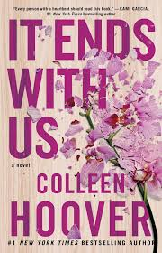
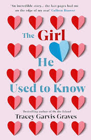

All the Bright Places takes place in modern day Indiana and follows two teenagers named Violet and
Finch. Finch is a boy with a harsh past who struggles with mental illness, even though his family
and friends won't admit it.
“Regretting You”
by Colleen Hoover
Book Cover
Morgan Grant and her sixteen-year-old daughter, Clara, would like nothing more than to be nothing
alike. Morgan is determined to prevent her daughter from making the same mistakes she did. By
getting pregnant and married way too young, Morgan put her own dreams on hold.
“After Series”
by Anna Todd
Book Cover
Tessa Young is a dedicated student, dutiful daughter and loyal girlfriend to her high school
sweetheart. Entering her first semester of college, Tessa's guarded world opens up when she meets
Hardin Scott, a mysterious and brooding rebel who makes her question all she thought she knew about
herself -- and what she wants out of life.
“You'd be home now”
by Kathleen Glasgow
Book Cover
In this raw, deeply personal story, a teenaged girl struggles to find herself amidst the fallout of
her brother's addiction in a town ravaged by the opioid crisis. For all of Emory's life she's been
told who she is. In town she's the rich one--the great-great-granddaughter of the mill's founder.
“The Selection”
by Kiera Cass
Book Cover
The opportunity to escape a rigid caste system, live in a palace, and compete for the heart of
gorgeous Prince Maxon. But for America Singer, being Selected is a nightmare. It means turning her
back on her secret love with Aspen, who is a caste below her, and competing for a crown she doesn't
want.
“It ends with us”
by Michelle Obama

Book Cover
Lily Bloom moves to Boston to chase her lifelong dream of opening her own business. A chance meeting
with charming neurosurgeon Ryle Kincaid soon sparks an intense connection, but as the two fall
deeply in love, she begins to see sides of Ryle that remind her of her parents' relationship.
“Aferdita”
by Sterjo Spasse
Book Cover
"Afërdita" është një roman që thekson rëndësinë e arsimimit të vajzave si rrugë drejt lirisë dhe
vetërealizimit, duke sfiduar normat patriarkale të kohës.
“Rruget tona bashkohen ne shesh”
by Nurimshahe Demalilaj
Book Cover
Ky libër trajton rrugëtimin e të rinjve drejt pjekurisë, duke theksuar rëndësinë e bashkëpunimit,
qëllimeve të përbashkëta dhe forcës së shoqërisë në ndërtimin e së ardhmes.
“The girl he used to know”
by Tracey Garvis Graves

Book Cover
At its core The Girl He Used to Know is a story of love, acceptance and second chances. Annika and
Jonathan come face to face in a grocery store...after 10 years. The two were college sweethearts and
it is instantly apparent that the connection they shared is alive and well even after years of
absence.
“White Nights”
by Fyodor Dostoevsky
Book Cover
The narrator is a young man living in Saint Petersburg who suffers from loneliness. He gets to know
and falls in love with a young woman, but the love remains unrequited as the woman misses her lover,
with whom she is finally reunited.
“Pride and Prejudice”
by Jane Austen
Book Cover
Set in England in the early 19th century, Pride and Prejudice tells the story of Mr and Mrs Bennet's
five unmarried daughters after the rich and eligible Mr Bingley and his status-conscious friend, Mr
Darcy, have moved into their neighbourhood.
“The Metamorphosis”
by Franz Kafka
Book Cover
Gregor is the main character of the story. He works as a traveling salesman in order to provide money
for his sister and parents. He wakes up one morning finding himself transformed into an insect.
After the metamorphosis, Gregor becomes unable to work and is confined to his room for most of the
remainder of the story.